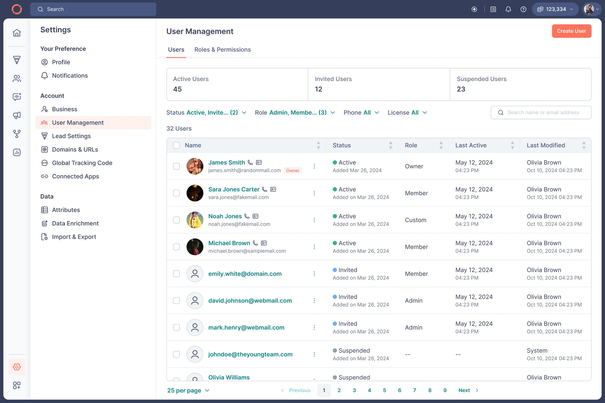
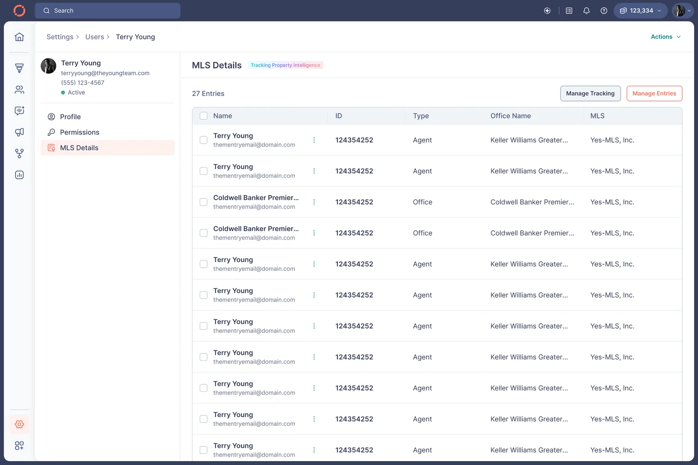
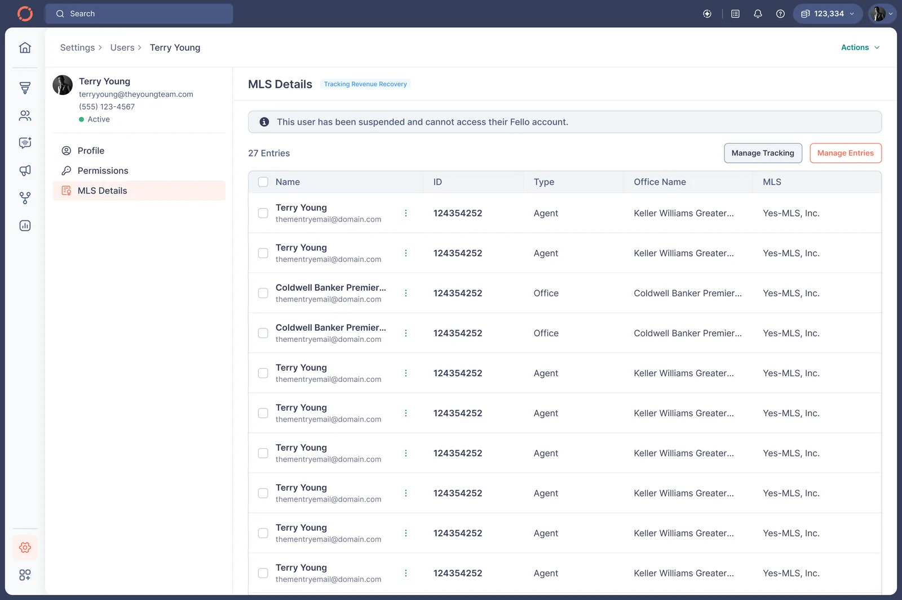

the commission nobody could see problem
us brokerages are legally owed money when a departed agent keeps transacting with a client the agency sourced. owners could not see it, size it, or chase it.
brokerages are owed a share when a departed agent keeps transacting, and owners could not see it, size it or chase it.
found our own pricing was deleting the data, added a user class that costs nothing to keep, then built the report on top of a roster that was finally complete.
about 30% more users added to fello, and owners who started the conversation they had been avoiding.
the problem
when an agent leaves a brokerage and transacts with a client the brokerage sourced, the brokerage is owed a share. that is not a grey area, it is contract.
nobody asked for this. it came up unprompted in 20 to 30 conversations with account owners, always as a complaint about money they had given up on, never as a feature request.
owners knew it in the abstract and could do nothing with it. they could not see which departed agents were still transacting, could not put a number on any of it, and therefore never opened the conversation.
the real blocker was our pricing
the obvious build is a dashboard. the dashboard would have been empty, and it took about a day to work out why.
fello charged per seat. a brokerage owner removes a departed agent the moment they leave, because keeping them costs money. so the people the feature is about are guaranteed to not be in the account. our own pricing model was deleting the dataset the feature needed.
the blocker was not the dashboard. it was the price list.
a user who is not a user
i added a user class: suspended. no seat cost, no permissions, no access, no login. a row that exists so the roster can be complete and costs the owner nothing to keep.
that is the entire mechanism. a user type whose only purpose is to not be a user.
why it is not called inactive
inactive was the obvious word and it tested badly. real estate professionals live in slack and google chat all day, where inactive means away from keyboard. it read as temporarily not typing, not gone from the company.
suspended already carries present but switched off in exactly those same tools. the vocabulary was borrowed from where the users already spend their day, not from where the product team spends theirs.
users first, then the report
the order was the decision. a revenue report run on an incomplete roster returns a wrong number, and a wrong number about money does not get corrected later. it gets disbelieved, and so does everything next to it.
so the roster was fixed first and the report waited. create user absorbed the whole change with almost no new surface: the role dropdown gained one item. bulk email entry handled owners adding years of departures in one go.
filling the roster
asking owners to remember everyone who left does not work. they do not remember, and the ones they do remember are the ones they are already angry about.
so the product suggests: mls records know who moved, and those became suggested additions with an add all. the roster grew about 30% off the back of it.

one person is not one record
mls data creates a new record every time somebody joins an agency, starts one, registers an office or renews a licence. fello's own ceo had more than five. one user in the shipped interface has 27, across agent and office records at several brokerages.
so a new mls details tab inside the existing user page lists every matched record with its type, office and source. an owner can delete a wrong match by hand. matching held up and corrections were rare, but the escape hatch is the reason owners trusted the number at all: a figure you cannot argue with is a figure you do not believe.
one calculation, two names
the same maths, run on an active agent, is property intelligence. run on a departed one it is revenue recovery. identical calculation, different meaning, so different name.
every user carries an editable revenue recovery start date, usually the suspension date, set by the owner. the product cannot know when a departure legally took effect, so it does not pretend to and asks the one person who does.
and it is not called ai anywhere, because it is not ai. it is a join across records the company already had.


the report never says you lost this much
it shows comparisons instead: your deals against total listings, your sellers and your buyers against total sold, by month and by year, including history from before launch. the owner draws the conclusion, which is the only version of that conclusion they will act on.
and when the number looks low, a banner inside the report names the teammates who are not in fello yet and lets the owner add them right there. the report sends people back to the roster at the exact moment the roster is worth fixing.
total new surface for all of it: one item in a dropdown, one tab, one report page, one banner. the users screen itself never changed.
what it does not do
it stops at awareness. it tells an owner what they are owed and by whom. recovering it is an offline conversation involving lawyers, and no interface is going to have that conversation for them.
that boundary is in the product, deliberately. a feature that implied it could collect would have been a better demo and a worse product.
there is no per-agent drill-down yet, and an owner cannot independently audit the calculation. the question i got over and over was whether adding a former employee back would hand them access. it would not, and we answered it in the launch forum and on the ceo's own page rather than in the interface. that was a trust problem and i treated it as a ui one for too long.
what it moved: about 30% more users added to fello, owner engagement up, and a handful of owners posting about it unprompted. retention barely moved. i would rather say that than round it up.
what i traded away
- awareness, not recovery. the product stops at telling an owner what they are owed.the collection flow, which is where the demo would have been most impressive and the product least honest.
- comparisons rather than an asserted dollar figure.the headline number. an owner who can dispute your maths stops reading, and this number is about their own money.
- a user class that exists only as a record, so the roster can be complete at no seat cost.a cleaner permissions model. suspended is a user that is deliberately not a user, and every screen that lists users had to be taught about it.
- the existing users screen was left alone.a better home for all of this. the change had to survive review and ship in two to three weeks, so it went where the owner already was.
engineering notes
- suspended
- a user status that exists only as a record anchor. no seat, no permissions, no login, so a complete roster costs the owner nothing to keep.
- identity
- one person maps to many mls records: agent records, office records, one per agency or licence event. records are matched to a user, every match is visible in the mls details tab, and a wrong one can be deleted by hand.
- the calculation
- one calculation, labelled by user status: property intelligence for an active agent, revenue recovery for a suspended one. a join across records fello already held, not a model.
- start date
- per user, editable, owner-set, defaulting to the suspension date, because the legal date of departure is not something the product can know.
you have read my account. there is another one.
read claude's take on this